THE FLEET MOVES WEST
Real activity in Pacer moves the ship. These are the latest verified numbers from our crew.
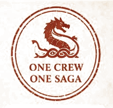
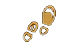
12,567,373TOTAL STEPSSteps toward Florida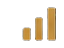
≈ 8,168.8 KMDISTANCE COVEREDFrom Greenland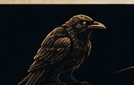
Every step is seen. Every effort matters. Every Viking belongs.
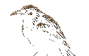
TWELVE AND A HALF MILLION STEPS
66 Vikings have carried the fleet to 12,567,373 steps — approximately 8,168.8 km since Greenland.
During the last 24 hours alone, the crew added 1,408,015 steps — approximately 915.2 km. Every oar matters. Every Viking moves the same fleet.
66 VIKINGS. ONE CREW. ONE SHIP.
GREENLAND ➜ FLORIDA
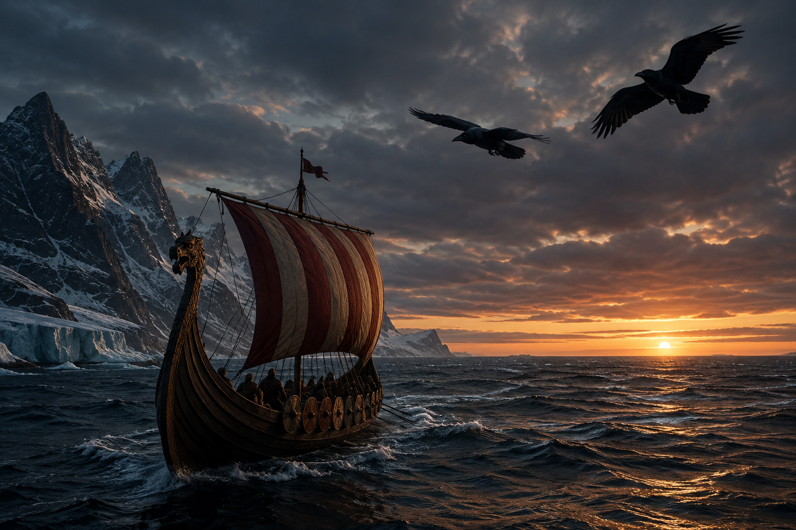
CHAPTER I — THE CROSSING
The fleet has sailed 12,567,373 steps — approximately 8,168.8 km — from Greenland toward the North American mainland. 16.76% of the 75,000,000-step voyage is complete.
The locked Day 11 position places the fleet farther west, close to the North American mainland. Chapter I ends only when the ships reach the mainland.
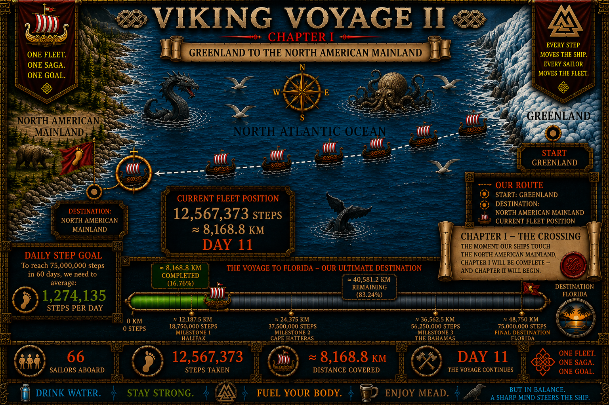
THE CROSSING CONTINUES
Cold water behind us. A continent ahead. On Day 11, our 66 sailors have carried the fleet approximately 8,168.8 km since Greenland.
62,432,627 steps — approximately 40,581.2 km — remain before Florida. With 49 days after Day 11, the fleet now needs approximately 1,274,135 steps per day.
Chapter I closes when our ships touch the North American mainland. Until then, every real step keeps the crossing alive.
THE VOYAGE BECOMES A LIVING SAGA
HISTORY
Verified history and archaeology guide the places, people and events we encounter along the route.
MYTH & SAGA
The gods, ravens and stories of the Norse world give the crossing its mythic voice.
OUR SAGA
The crew's real steps decide the pace, the weather and the next chapter of the voyage.
THE EVIDENCE THEY LEFT BEHIND
At L’Anse aux Meadows, archaeology reveals more than a distant landfall. The remains of eight Norse buildings, ironworking, boat nails and wooden debris show that Norse sailors came ashore, built, worked and repaired their ships.
Bog iron was gathered locally and smelted at the settlement. These traces preserve some of the clearest physical evidence of Norse activity in North America around AD 1000.
THE SAGAS TOLD THE STORY. ARCHAEOLOGY LEFT THE PROOF.
THE SAGA MAY BE WILD. THE HISTORY MUST BE TRUE.
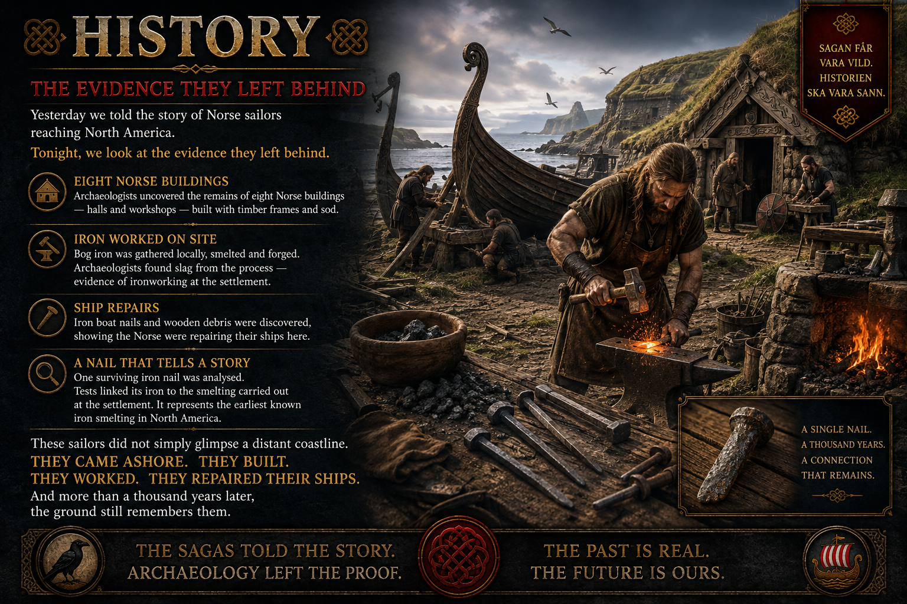
THE CAPTAIN'S NAME IS SPOKEN
Starfire Silverstar — Þóra — asked the question that had remained unanswered: what is the Captain's Viking name?
From Day 11 onward, the Captain carries the name HÁKON.
Old Norse: Hákon · Runes: ᚼᛅᚴᚢᚾ
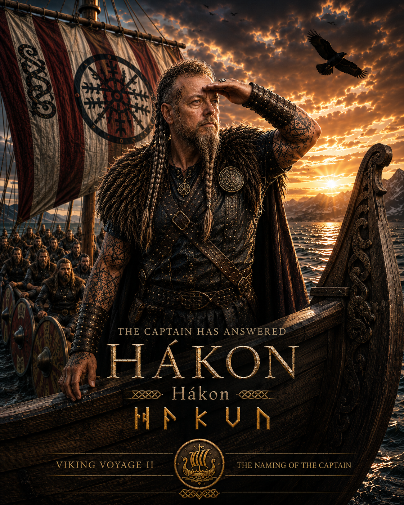
THE SEA CHANGES
For eleven days, the fleet has sailed west. Tonight the wind falls, the waves grow strangely quiet, and Hugin and Munin disappear into the darkness.
Captain Hákon stands at the bow as a wall of black clouds rises from the sea. The command passes from ship to ship: lower the sails, secure the oars, wake every Viking.
THE NORTH ATLANTIC IS COMING FOR US.
TO BE CONTINUED…
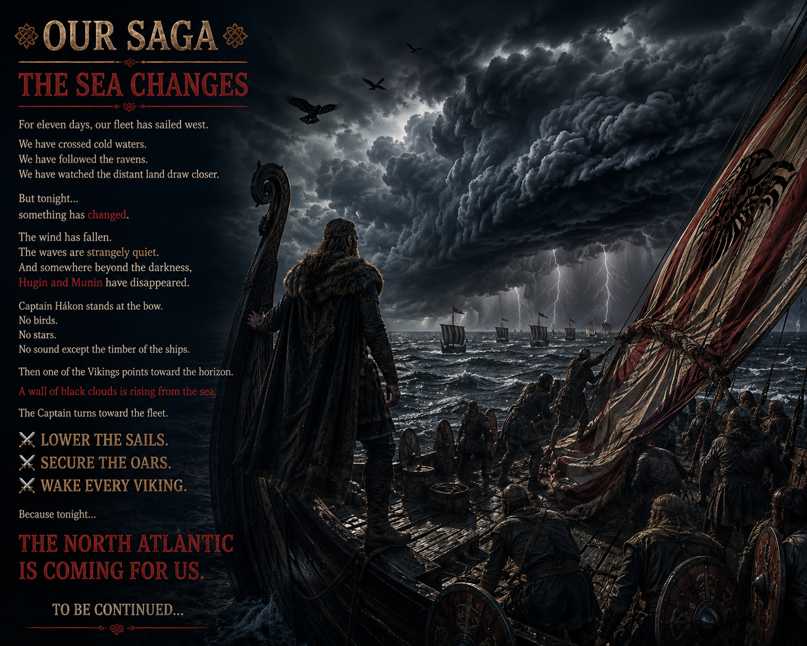
THREE NEW NAMES ENTER THE SHIP'S ROLL
WHY WE NAME OUR SAILORS
Crew Honors is a tradition created for Viking Voyage II. It belongs to OUR SAGA — it is not presented as a reconstruction of a documented Viking Age ceremony.
Once entered into THE SHIP'S ROLL, the name remains with that sailor for the rest of the voyage.
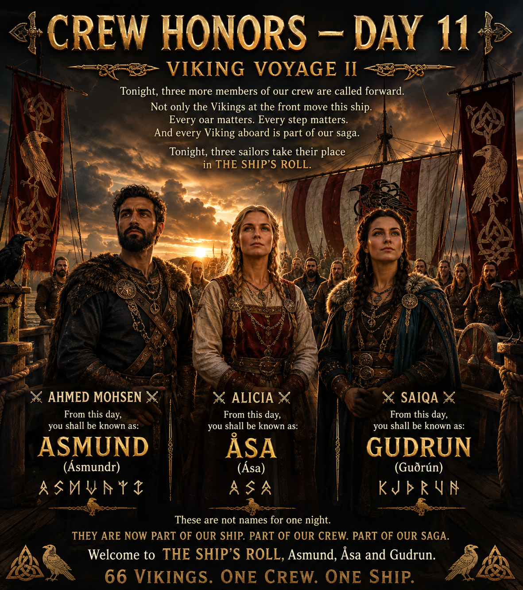
A new permanent name aboard the ship.
A new permanent name aboard the ship.
A new permanent name aboard the ship.
NAMES CARRIED ABOARD
YESTERDAY'S CROSSING
The Day 10 gallery remains aboard as part of the voyage archive while Day 11's written log records the fleet's newest progress.
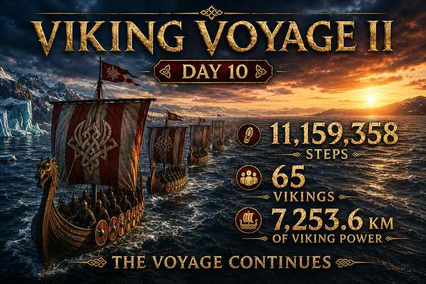
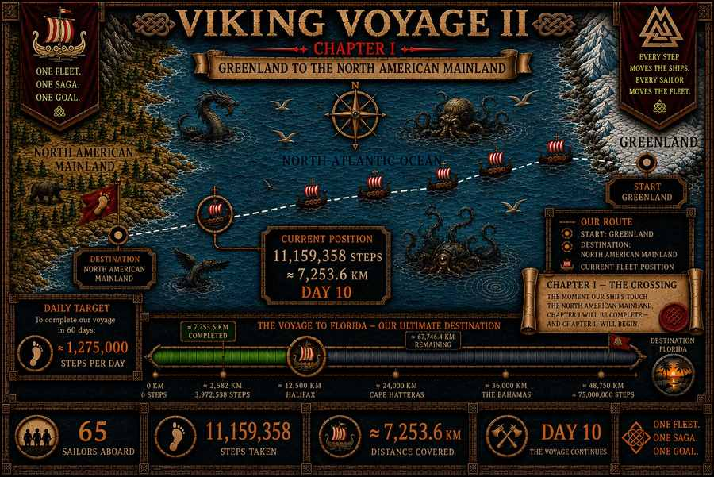
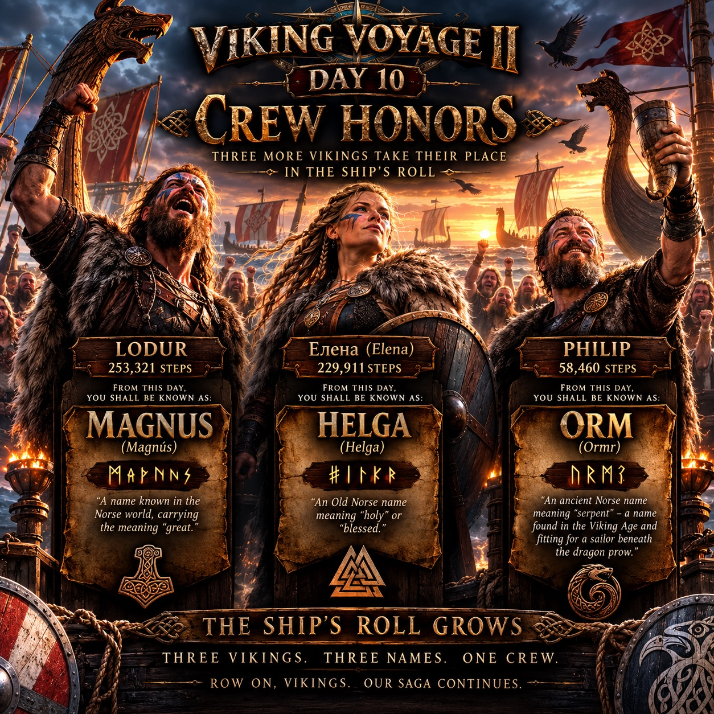
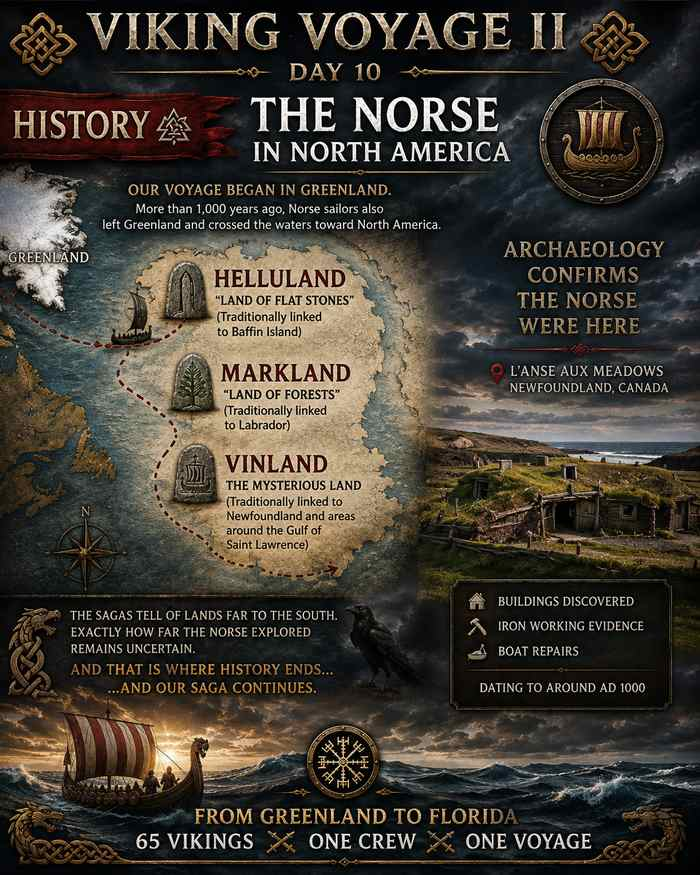
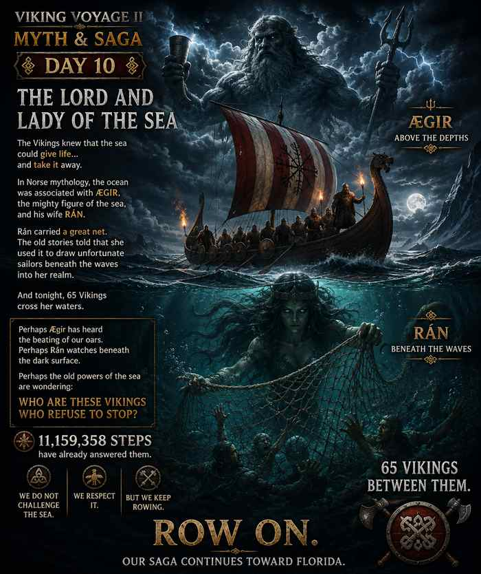
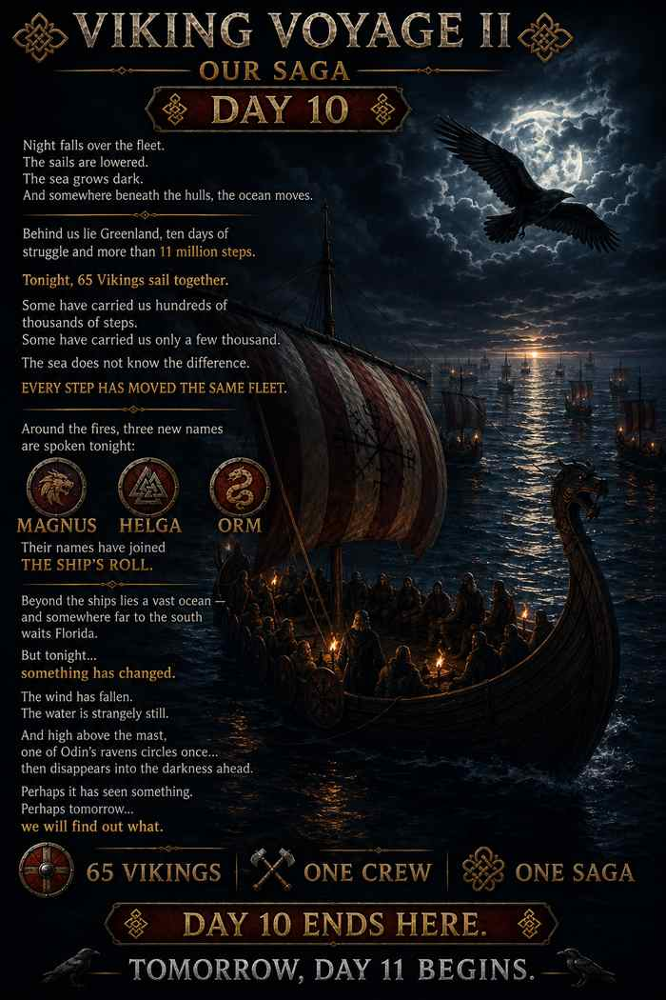
“Every step counts.
Every Viking matters.”